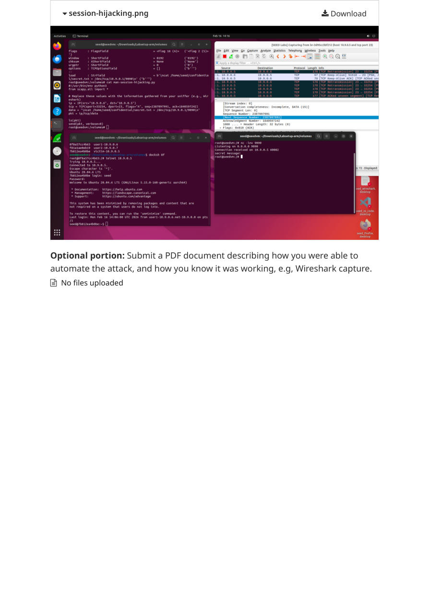

Understanding protocol weaknesses through evidence.
For this graduate-level lab, I examined how TCP connection state and unencrypted remote access can be exploited in a deliberately isolated environment. My graded submission includes source code, terminal screenshots, and Wireshark evidence. The experiments are documented using original lab screenshots and source code.
01
SYN Flooding & SYN Cookies
Compared connection behavior during a SYN flood with SYN cookie protection enabled and disabled, highlighting backlog exhaustion and mitigation limits.
Defensive takeaway: Monitor SYN rates and half-open connections; deploy SYN cookies and layered DoS controls.
02
TCP Reset Spoofing
Explored how crafted TCP RST packets can terminate an established Telnet connection when accepted by the endpoint.
TCP RST evidence — host Ubuntu VM, client container (10.9.0.6), victim container (10.9.0.5) and attacker tools; see manual and automated reset discussion below.
Manual reset: Scapy was used to construct a TCP RST packet using observed connection parameters.
Automated reset: The auto_rst.py script monitors Telnet traffic and generates reset packets based on observed flows. The original submission screenshot contains the code and a separate capture of RST traffic; the full-resolution labeled code screenshot remains to be added.
Investigated packet injection into an unencrypted Telnet session using TCP sequence and acknowledgment information.

Defensive takeaway: Replace Telnet with SSH and segment sensitive management traffic.
04
Reverse Shell via Hijacking
Examined the impact of session compromise by demonstrating a reverse-shell scenario within the controlled lab.
Defensive takeaway: Monitor outbound connections and correlate network events with endpoint telemetry.
ORIGINAL LAB SCREENSHOTS / LABELED VIEWS
Packet-level evidence
These views use screenshots from the original SEED Labs submission. Labels describe the visible lab roles and observed behavior; the original captures remain available at full resolution.
01 · SYN COOKIE ENABLEDTarget: 10.9.0.5
SYN flood — protection enabledHost VM: seedvm · victim container: 10.9.0.5 · attacker: seed-attacker. Compare with the disabled-cookie test below.
02 · SYN COOKIE DISABLEDTarget: 10.9.0.5
SYN flood — protection disabledVictim container: 10.9.0.5 · attacker: seed-attacker. The original submission includes Telnet testing and SYN-RECV state observations.
Automated reset — Python code includedThe automated Scapy script monitors Telnet traffic and sends RST packets. The original evidence includes terminal output and Wireshark packets.
05 · TCP SESSION HIJACKINGInjection + capture
Session packet injectionClient: 10.9.0.6 · server: 10.9.0.5 · attacker: seed-attacker. Original submission did not include every requested Wireshark SEQ/ACK frame.
Observed listener connectionThe demonstration shows the security impact of TCP session compromise in the isolated lab environment.
EVIDENCE & LIMITATIONS
Transparent documentation
These images are the original screenshots extracted from the lab submission. Captions identify Docker-container roles; no recreated terminal content is presented as packet-capture evidence. The session-hijacking task lost five points because the submission omitted a required Wireshark frame showing injected code with SEQ/ACK values. Raw PCAP files are not included. Some C starter code originated with SEED Labs and requires upstream attribution before public source publication.